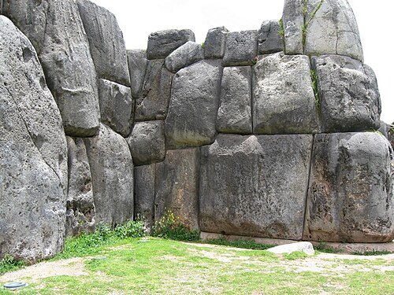
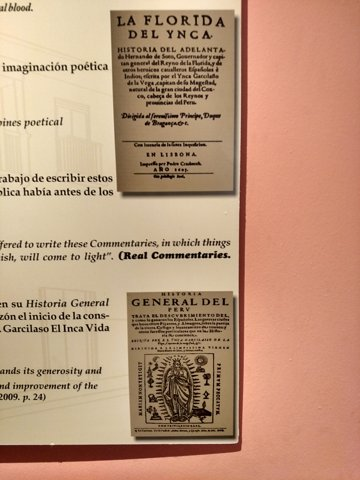
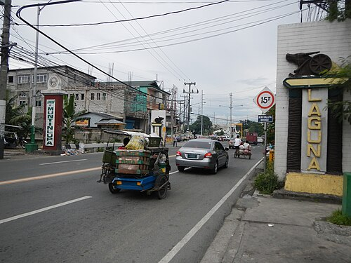

This map shows 12 of the most-searched sights in Cusco as photo spots, ranked by how often people search for them: Sacsayhuamán, Qorikancha, Cusco Cathedral, San Pedro Market and Twelve-angled stone lead the list. Every spot has a pin on the subject and a phone icon showing where to stand, with tips for shooting it on your phone: which lens to use, how to frame it, a settings tip and the best time of day. Directions and Navigate buttons take you to the standing point on foot or by public transport. 3 spots are free to view; the full map is for members.
The 3 free photo spots
1Sacsayhuamán

Sacsayhuamán is the Inca citadel on the northern edge of Cusco, built on a steep hill above the city at about 3,701 metres. Chroniclers recorded that it was begun in the reign of Pachacuti and carried on by his successors. Its dry stone walls use huge blocks cut to fit tightly together without mortar, and that precision is what you want to capture. The walls are laid out in a zigzag above an open esplanade, with Cusco's rooftops and hills behind. Cusco and Sacsayhuamán were listed together as a UNESCO World Heritage Site in 1983.
It is a companion shot to the walls rather than a close-up of them. From here you get a broad panorama of Cusco and its valley, with the statue as a foreground element. The walls are only a short walk away to the north-west and appear as a distant feature, not the main subject. Guides also suggest the lookout at Cruzmoqo, with its giant cross, for another wide city view. Confirm that one on the ground.
For close shots of the walls, walk across to the site itself. Stand back on the esplanade so the zigzag fills the frame, then step in close for the joints between the stones. Entry to the archaeological site needs a ticket, so check the official site before you go.
Where it is: Sacsayhuamán sits on the northern outskirts of Cusco, on a steep hill overlooking the historic city. The Cristo Blanco viewpoint is on the hilltop close by, to the south-east of the walls.
Shooting it on your phone
Lens: Use the ultra-wide (0.5x) for the full valley panorama with the statue close in the foreground. Use the default lens (1x) for a more natural view of the city. Switch to telephoto (2x-5x, depending on your phone) to pick out the distant walls to the north-west.
Where to stand: Stand on Cristo Blanco (the hilltop viewpoint beside the statue). A broad panorama of Cusco and its valley, with the white statue as a foreground element; the Sacsayhuamán walls are only a short walk away rather than the main subject. On the hilltop viewpoint beside the statue. Face out over Cusco and its valley, and keep the white statue to one side as a foreground element. Turn north-west for the walls, which are a short walk away and only a distant feature from here.
Framing: Place the statue on one third of the frame and let the city and valley fill the rest. Turn on gridlines to keep the horizon level. Try one wide shot and one zoomed shot toward the walls for contrast. If you also walk over to the site, the esplanade gives a view of the zigzag walls rising above the open ground. Cruzmoqo, with its giant cross, is an alternative lookout for a city view.
Settings tip: Tap the city to focus, then drag the exposure slider down slightly so the sky keeps its colour at sunset. Panorama mode works well for the valley if you move slowly and keep the phone level. Night mode may help once the light drops.
Best time: Sunset, according to guides. Arrive a little early to find a spot and try different framings.
2Coricancha

Coricancha was the most important temple of the Inca Empire, and its name in Quechua means 'golden temple'. Its walls were once covered in sheets of gold. After the Spanish conquest the temple was largely taken apart, and its stonework became the foundation of the Church and Convent of Santo Domingo, built in the 17th century after the 1650 earthquake. That mix of dark, rounded Inca masonry with a colonial church and convent beside it is what makes the place so rewarding to photograph. The Inca stone has stayed standing through major earthquakes that damaged the church above it, and the tightly fitted blocks show well in a close photo. You don't need to go inside for a good shot. From the pavement of Avenida El Sol you can see the curved temple wall with the church and convent alongside it, so it works as a quick outdoor stop. If you do go in, the garden and cloisters give a second view, with the rounded Inca wall set against the colonial arches. Photography is generally allowed inside, but not of the Cusco School paintings. Keep your phone steady against your body when you shoot, and stay aware of other people on the pavement while you frame the wall.
Where it is: Coricancha is in Cusco, with the Santo Domingo church and convent built on top of the old temple. The street view is from Avenida El Sol, along the temple's outer wall.
Shooting it on your phone
Lens: Start with the default lens (1x) to take in the curved Inca wall and the church and convent behind it. If the pavement is narrow and you can't step back, switch to the ultra-wide (0.5x). Use the telephoto (2x or more, depending on your phone) for close shots of the stonework.
Where to stand: Stand on Avenida El Sol (facing the temple's street facade, from the sidewalk). The dark, rounded Inca temple wall seen from the street, with the colonial church and convent alongside it. On the pavement facing the temple's street side. From here you see the dark, rounded Inca wall with the colonial church and convent alongside.
Framing: Turn on the gridlines and place the curve of the wall along one of the lower lines, with the church rising above it. Keep the camera level so the straight lines of the building don't lean. For a second view, the garden inside the site shows the rounded Inca wall against the colonial arches and cloisters. Check the official site before you go to plan a visit inside.
Settings tip: Tap on the wall to set focus, then drag the exposure slider down a little if the sky is bright, so the stone keeps its colour and detail. Use the telephoto for details of the masonry, and hold the phone with both hands.
Best time: Soft morning or late-afternoon light is usually kinder to the stonework than harsh midday sun. Go earlier or later if you want fewer people and less traffic in the frame.
4Mercado Central de San Pedro

Mercado Central de San Pedro is Cusco's central market, and it is a good place to photograph everyday life rather than monuments. Expect colour at close range: typical market goods, everyday scenes, and people serving, chatting and carrying goods. Because it is a working market, the best pictures are usually small scenes. Try a tidy pyramid of produce, a row of hanging items, or the light coming through the entrance into a busy aisle.
On the map the phone icon on the map sits on the market itself, so you take your photos from inside or at the entrance, with nothing to walk towards. The aisles can be narrow and crowded, so keep your elbows in, keep your phone close to your body when you are not shooting, and step aside so you do not block anyone who is working.
Start with the default lens (1x) for natural-looking shots of stalls. Switch to the ultra-wide (0.5x) when an aisle is too tight to fit a whole scene in. Use zoom (2x to 5x, depending on your phone) to pick out details from a polite distance. Always ask before taking a close portrait of a stallholder; a smile and a gesture towards your phone usually works, and buying something small is a friendly way to start a conversation. I can't give you history or size figures for the market here, so look at the official local information if you want those.
Where it is: The market is in Cusco.
Shooting it on your phone
Lens: Start with the default lens (1x). Use the ultra-wide (0.5x) for narrow aisles and the telephoto/zoom (2x-5x, depending on your phone) for details such as produce and textiles.
Where to stand: Stand right at the subject: the phone icon on the map marks the spot. Pick a spot at the edge of an aisle or just inside an entrance, out of the way of customers and stallholders.
Framing: Turn on the gridlines and look for a stall in the foreground, with the aisle leading back behind it. Fill the frame with colour: a pile of fruit, a row of bags or a flower stall. For people, use portrait mode only after asking permission.
Settings tip: Tap on the brightest colour to focus, then lower the exposure slider a little so bright patches at the entrance do not wash out. If the interior is dim, hold the phone steady against your body or a pillar and let night mode work if it switches on.
Best time: Morning is usually the liveliest, with the most stalls set up and the most activity. Quieter periods make it easier to take photos without blocking people.
9 more spots for members
These spots are on the map as grey numbered pins. Where to stand, the phone tips, photos and directions for them come with Explorer membership.
- 3Cusco Cathedral · members
- 5Twelve-angled stone · members
- 6Church of San Blas · members
- 7Inka Museum · members
- 8Plaza de Armas, Cusco · members
- 9Church of the Society of Jesus, Cusco · members
- 10Qenko · members
- 11Santa Catalina Convent · members
- 12Church of San Francisco, Cusco · members
Get every spot with Explorer membership
Explorer opens every spot on every map in the library: where to stand, how to frame it on your phone and how to get there, plus the Xdatrys Maps app with maps saved on your phone for use without signal. $9.99 a month or $59.99 a year; cancel any time.
Join Explorer Compare free and Explorer
Not ready to join?
Get Pocket Lens, our free daily smartphone travel photography newsletter.
Free, and you can unsubscribe at any time. If the form does not show, sign up on our newsletter page.
Questions
What are the top photo spots in Cusco?
The first three on this map are Sacsayhuamán, Qorikancha and Cusco Cathedral. They are ranked by how often people search for them. The full map has 12.
Where should I stand to photograph Sacsayhuamán?
Stand on Cristo Blanco (the hilltop viewpoint beside the statue). Use the ultra-wide (0.5x) for the full valley panorama with the statue close in the foreground.
When is the best time to photograph Qorikancha?
Soft morning or late-afternoon light is usually kinder to the stonework than harsh midday sun. Go earlier or later if you want fewer people and less traffic in the frame.
How do I get to San Pedro Market?
No public transport stops are listed for this spot; use the map to reach the market.
Credits
Map data © OpenStreetMap contributors (ODbL); base map built with Protomaps from OpenStreetMap data. Photos from Wikimedia Commons, credited under each photo with their licence. Background reading for the free spots: Sacsayhuamán, Coricancha (Wikipedia, CC BY-SA). Access rules and opening times change: check before you go.